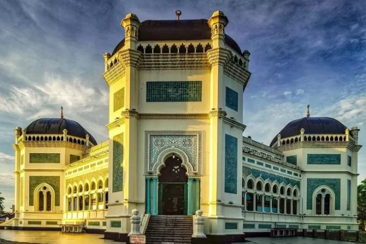
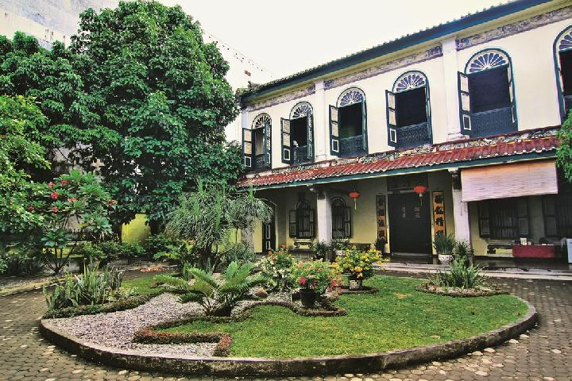
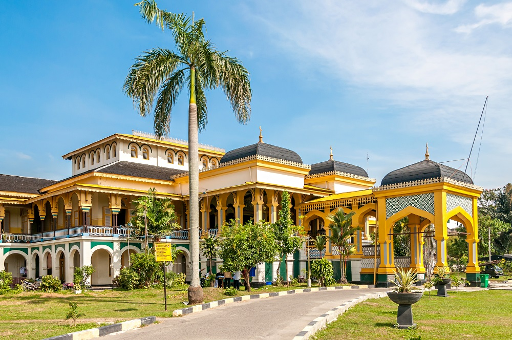

Destinasi Wisata

Masjid Raya

Tjong A Fie Mansion

Istana Maimun

Kota Medan merupakan kota Metropolitan yang terletak di Sumatera Utara. Kota Medan dibentuk dan berdiri secara resmi sejak tanggal 1 Desember 1952. Medan adalah kota multietnis yang penduduknya terdiri dari orang-orang dengan latar belakang budaya dan agama yang berbeda-beda. Selain Melayu dan Batak Karo sebagai penghuni awal, Medan didominasi oleh etnis Jawa, Batak, Tionghoa, Minangkabau, dan India. Mayoritas penduduk Medan bekerja di sektor perdagangan, sehingga banyak ditemukan ruko di berbagai sudut kota.